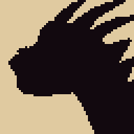

THE WARDEN · HEAD STUDY V5
64×64 grid, 18 colours. V4's proportions kept, with the details real reptiles, birds and rams have: scales by region, an ear opening, skin folds, interlocking conical teeth, a hooked snout, a raised nostril, growth rings along the horns.

Palette · 18 colours
{{r.name}} · {{r.n}}
Same 18 colours as V4: every detail is drawn with a tone one step darker, not with new colours.
What changed from V4: the real-animal details
- Scales by region (lizard): large plates on the crown and brow, a row of lip scales along the upper jaw, and a few small scales on the shadow side of the cheek and neck, thickest where light turns to shadow.
- Ear and folds (lizard): an ear opening behind the jaw hinge, and three skin folds where the head meets the neck.
- Teeth (crocodile): two rows of conical teeth that interlock, with one or two larger in each row, instead of a single mammal fang.
- Snout (crocodile, raptor): the upper jaw hooks over the lower at the tip, and the nostril sits on a raised bump.
- Horns (ram): growth rings along the whole length, closer together near the root.
- Kept from V4: proportions, crest, neck, eye, and the same 18 colours.